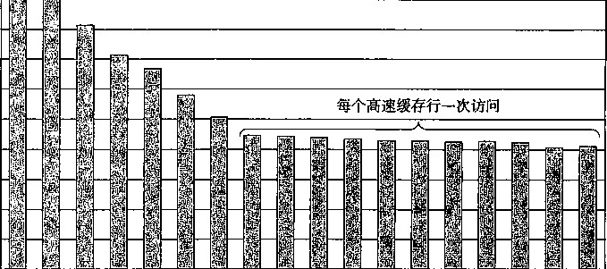

层次结构下面走，传送时间增加，减少传送的数量就变得更加重要。一般而言，高速缓存越往下 层，越可能使用写回而不是直写。
高速缓存行、组和块有什么区别？
很容易混淆高速缓存行、组和块之间的区别。让我们来回顾一下这些概念 ， 确保概念 清晰：
• 块是一个固定大小的信息包，在高速缓存和主存（或下一层高速缓存）之间来回传送。
• 行是高速缓存中存储块以及其他信息（例如有效位和标记位）的容器。
* 组是一个或多个行的集奋。直接映射高速缓存中的组只由一行组成。组相联和全相联高速 缓存中的组是由多个行组成的。
在直接映射高速缓存中，组和行确实是等价的。不过，在相联高速缓存中，组和行是>[艮不一 样的，这两个词不能互换使用。
因为一行总是存储一个块，术语 “ 行 ” 和 “ 块 ” 通常互换使用。例如，系统专家总是说高速 缓存的 “ 行大小 ” ，实际上他们指的是块大小。这样的用法十分普遍，只要你理解块和行之间的 区别，它不会造成任何误会。
6.5 编写高速缓存友好的代码
在6.2节中，我们介绍了局部性的思想，而且定性地谈了一下什么会具有良好的局部性。既 然我们已经明白了髙速缓存存储器是如何工作的了，我们就能更加精确一些了。局部性比较好的 程序更容易有较低的不命中率，而不命中率较低的程序往往比不命中率较髙的程序运行得更快。 因此，从具有良好局部性的意义上来说，好的程序员总是应该试着去编写 高速缓存友好 （cache friendly)的代码。下面就是我们用来确保代码高速缓存友好的基本方法 ：
让最常见的情况运行得快。 程序通常把大部分时间都花在少量的核心函数上 ， 而这些函 数通常把大部分时间都花在了少量循环上。所以要把注意力集中在核心函数中的循环上，而忽略 其他部分。
在每个循环内部缓存不命中数量最小。 在其他条件（例如加载和存储的总次数）相同的 情况下，不命中率较低的循环运行得更快。
为了看看实际上这是怎么工作的，考虑6.2节中的函数sumvec ：
int sumvec(int v[N])
{
int i, sum = 0;
4
for (i = 0; i < N; i++)
sum += v [i];
return sum;
>
这个函数高速缓存友好吗？首先，注意对于局部变量i和sum,循环体有良好的时间局部性。 实际上，因为它们都是局部变量，任何合理的优化编译器都会把它们缓存在寄存器文件中，也就 是存储器层次结构的最高层中。现在考虑一下对向量v的步长为1的引用。一般而言，如果一 个高速缓存的块大小为B字节，那么一个步长为A的引用模式（这里&是以字为单位的）平均每 次循环迭代会有min(l, (wordsizeX幻/奶次缓存不命中。当hi时，它取最小值，所以对v的步 长为1的引用确实是高速缓存友好的。例如，假设v是块对齐的，字为4个字节，高速缓存块 为4个字，而高速缓存初始为空（冷高速缓存)。然后，无论是什么样的高速缓存结构，对v的 引用都会得到下面的命中和不命中模式：
|
v[i] |
i = 0 |
/ = 1 |
/=2 |
/=3 |
/=4 |
i = 5 |
/ = 6 |
/=7 |
|
访问顺序，命中 [h] 或不命中 [m] |
l[m] |
2[h] |
3[h] |
4[h] |
5[m] |
6[h] |
7[h] |
8[h] |
在这个例子中，对v[0]的引用会不命中，而相应的包含v[0]〜v[3]的块会被从存储器 加载到高速缓存中。因此，接下来三个引用都会命中。对v[4]的引用会导致不命中，而一个新 的块被加载到高速缓存中，接下来的三个引用都命中，依此类推。总的来说，四个引用中，三个 会命中，在这种冷缓存的情况下，这是我们所能做到的最好的情况了。
总之，简单的sumvec示例说明了两个关于编写高速缓存友好的代码的重要问题：
•对局部变量的反复引用是好的，因为编译器能够将它们缓存在寄存器文件中（时间局部 性)。
•步长为1的引用模式是好的，困为存储器层次结构中所有层次上的缓存都是将数据存储为 连续的块（空间局部性)。
在对多维数组进行操作的程序中，空间局部性尤其重要。例如，考虑62节中的sumarrayrows 函数，它按照行优先顺序对一个二维数组的元素求和：
int sumarrayrows(int a[M][N]) .
{
int i, j , sum = 0;
4
for (i = 0; i < M; i++)
for (j = 0; j < N; j++)
sum += a[i] [j];
return sum;
>
但是如果我们做一个看似无伤大雅的改变——交换循环的次序，看看会发生什么：
由于C语言以行优先顺序存储数组，所以这个函数中的内循环有与sumvec —样好的步长为1 的访问模式。例如，假设我们对 这个高 速缓存做与对sumvec—样的假设。那么对数组a的引 用会得到下面的命中和不命中模式 ：
a[i] [j] j=0 7 = 1 7=2 j = 3 j =4 j=5 j=6 j = 7
i = 0 |
l[m] |
2[h] |
3[h] |
4[h] |
5[m] |
6[h] |
7[h] |
8[h] |
i = l |
9[m] |
10 [h] |
11 [h] |
12 [h] |
13 [m] |
14 [h] |
15 [h] |
16 [h] |
i = 2 |
17 [m] |
18 [h] |
19 [h] |
20 [h] |
21 [m] |
22 [h] |
23 [h] |
24 [h] |
i = 3 |
25 [m] |
26 [h] |
27 [h] |
28 [h] |
29 [m] |
30 [h] |
31 [h] |
32 [h] |
int sumarraycols(int a[M][N])
{
3 int i，j, sum = 0;
A '
for (j = 0; j < N; j++)
for (i = 0; i < M; i++)
sum += a[i] [j];
return sum;
>
在这种情况下，我们是一列一列而不是一行一行地扫描数组的。如果我们够幸运，整个数组都在 高速缓存中，那么我们也会有相同的不命中率1/4。不过，如果数组比高速缓存要大（更可能出 现这种情况)，那么每次对a [i] [j]的访问都会不命中！
a[i] [j] 7=0 j = 1 j = 2 7=3 j = 4 j = 5 j = 6 j = 7
i = 0 |
l[m] |
5[m] |
9[m] |
13 [m] |
17 [m] |
21 [m] |
25 [m] |
29 [m] |
i = l |
2[m] |
6[m] |
10 [m] |
14 [m] |
18 [m] |
22 [m] |
26 [m] |
30 [m] |
i = 2 |
3[m] |
7[m] |
11 [m] |
15 [m] |
19 [m] |
23 [m] |
27 [m] |
31 [m] |
i = 3 |
4[m] |
8[m] |
12 [m] |
16 [m] |
20 [m] |
24 [m] |
28 [m] |
32 [m] |
较高的不命中率对运行时间可以有显著的影响。例如，在桌面机器上， sumarrayrow 运行 速度是 sumarraycols 的两倍。总之，程序员应该注意他们程序中的局部性，试着编写利用局 部性的程序。
_ 练习题 6.18在信号处理和科学计算的应用中，转置矩阵的行和列是一个很重要的问题。从局部性 的角度来看，它也很有趣，因为它的引用模式既是以行为主（row-wise)的，也是以列为主（column- wise)的。例如，考虑下面的转置函数：
typedef int array[2] [2];
2
void transpose1(array dst, array src)
{
.5 int i, j;
6
for (i = 0; i < 2; i++) {
for (j = 0; j < 2; j++) {
dst[j] [i] = src[i] [j];
>
n >
12 >
假设在一台具有如下属性的机器上运行这段代码：
•sizeof(int) == 4。
•src数组从地址0开始，dst数组从地址16开始（十进制）。
•只有一个L1数据高速缓存 ， 它是直接映射的、直写、写分配 ， 块大小为8个字节。
•这个高速缓存总的大小为16个数据字节，一开始是空的。
•对src和dst数组的访问分别是读和写不命中的唯一来源。
对每个row和col,指明对src [row] [col]和dst [row] [col]的访问是命中（h)还是不命 中(m)o例如，读src[0] [0]会不命中，写dst[0] [0]也不命中。
dst 数组
列0 列1 |
||
0行 |
m |
|
1行 |
||
src 数组 ■
列0 列1 0行 m
1行 I —
对于一个大小为32数据字节的高速缓存重复这个练习。
练习题 6.19最近一个很成功的游戏SimAquarium的核心就是一个紧密循环（tight loop),它计算256 个海藻（algae)的平均位置。在一台具有块大小为16字节（5=16)、整个大小为1024字节的直接映
射数据缓存的机器上测量它的高速缓存性能。定义如下：
struct algae_po sit ion -C
int x;
int y;
>；
5
struct algae_position grid[16][16];
int total_x = 0, total_y = 0;
int i, j;
还有如下假设：
•sizeof(int) == 4 。
grid 从存储器地址 0 开始。
*这个高速缓存开始时是空的。
•唯一的存储器访问是对数组 grid 的元素的访问。变量 i 、 j 、 total_x 和 total_y 存放在寄存器中。
确定下面代码的高速缓存性能：
for (i = 0; i < 16; i++) {
for (j = 0; j < 16; j++) {
grid[i] [j] .x;
for (i = 0; i < 16; i++) {
j < 16; j++) { grid[i] [j] .y;
>
}
读总数是多少？
缓存不命中的读总数是多少？
不命中率是多少？
练习题 6.20给定练习题6.19的假设，确定下列代码的高速缓存性能：
for (i = 0; i < 16; i++){
for (j = 0; j < 16; j++) {
i total_x += grid[j] [i] .x;
^ totally += grid[j] [i] _y;
}
>
读总数是多少？
高速缓存不命中的读总数是多少？
不命中率是多少？
如果高速缓存有两倍大，那么不命中率会是多少呢？
® 练习题 6.21给定练习题6.19的假设，确定下列代码的高速缓存性能：
'! for (i = 0; i < 16; i++){
for (j = 0; j < 16; j++) {
total_x += grid[i] [j] .x;
total一y += gridCi] [j] .y;
}
>
读总数是多少？
高速缓存不命中的读总数是多少？ ，
不命中率是多少？
如果高速缓存有两倍大，那么不命中率会是多少呢？
6.6 综合：高速缓存对程序性能的影响
本节通过研究高速缓存对运行在实际机器上的程序的性能影响 ， 综合了我们对存储器层次结 构的讨论。
存储器山
一个程序从存储系统中读数据的速率称为读 呑吐量 （read throughput),或者有时称为 读带宽
(read bandwidth)o如果一个程序在^秒的时间段内读《个字节，那么这段肘间内的读吞吐量就 等于典型地是以兆字节每秒（MB/s)为单位的。
如果我们要编写一个程序，它从一个紧密程序循环（tight program loop)中发出一系列读请 求，那么测量出的读吞吐量能让我们看到对于这个读序列来说的存储系统的性能。图6-42给出 了一对测量某个读序列读吞吐量的函数。
code/mem/mountain/mountain. c
double data[MAXELEMS]; h The global array we '11 be traversing -/
2
/*
* test - Iterate over first "elems" elements of array "data"
* with stride of "stride".
*/ •
void test(int elems, int stride) /* The test fimction .
{ ..
9 int i;
double result = 0.0;
volatile double sink;
12
for (i = 0; i < elems; i += stride) {
result += data[i];
}
'16 sink = result; /* So compiler doesn' t optimize away the loop */
} ■ '
18
/*
* run ~ Rim test (elems, stride) and. return read througlxput (MB/s).
* "size H is in bytes, "stride" is in array elements ， and
* Hhz is CPU clock frequency in Mhz.
*/
double run(int size, int stride, double Mhz)
-C
double cycles;
int elems = size / sizeof(double);
28
test(elems, stride); 卜 warm up the cache */
cycles = fcyc2(test, elems, stride, 0); /本 call test(elems,stride) */
return (size / stride) / (cycles / Mhz); /* convert cycles to MB/s */
>
code/mem/mountain/mountain. c
图6-42测量和计算读吞吐量的函数。我们可以通过以不同的size (对应于时间局部性）和stride (对应于空间局部性）的值来调用run函数，产生某台计算机的存储器山
test函数通过以步长stride扫描整数数组的头elems个元素来产生读序列。run函数 是一个包装函数（wrapper),它调用test函数，并返回测量出的读吞吐量。第29行对test 函数的调用会对高速缓存做暖身。第30行的f CyC 2函数以参数elems调用test函数，并估 计test函数的运行时间，以CPU周期为单位。注意，rim函数的参数size是以字节为单位 的，而test函数对应的参数elems是以数组元素为单位的。另外，注意第31行将MB/s计算 为10 6 字节/秒，而不是2 2() 字节/秒。
run函数的参数size和stride允许我们控制产生出的读序列的时间和空间局部性程度。 size的值越小，得到的工作集越小，因此时间局部性越好。stride的值越小，得到的空间局 部性越好。如果我们反复以不同的size和stride值调用run函数，那么我们就能得到一个
读带宽的时间和空间局部性的二维函数，称为存储器山（memorymountain)。
每个计算机都有表明它存储器系统的能力特色的唯一的存储器山。例如，图6-43展示了 Intel Core i7系统的存储器山。在这个例子中，size从2KB变到64KB, stride从1变到64 个元素，每个元素是一个8个字节的double。
空间局部性 的斜坡
Core i7 2.67 GHz 32 KB LI d-cache 256 KB L2 cache 8 MB L3 cache
时间局部性山脊
图6-43存储器山
这座Core i7山的地形地势展现了一个很丰富的结构。垂直于size轴的是四条山脊，分别 对应于工作集完全在L1高速缓存、L2高速缓存、L3高速缓存和主存内的时间局部性区域。注 意，L1山脊的最高点（那里CPU读速率为6GB/S)与主存山脊的最低点（那里CPU读速率为 600MB/S)之间的差别有一个数量级。
L1山脊有一个特性应该指出来。对于非常大的步长，注意读吞吐量是如何随着工作集大小 接近于2KB而下降的（跌落到山脊的另一边)。因为L1高速缓存保存着整个工作集，所以这个 特性不能反映L1高速缓存的真实性能。它们是调用test函数和准备执行循坏的开销的结果。 对于小的工作集中的大步长来说，这些开销没有像使用较大工作集时那样得到补偿。
在L2、L3和主存山脊上随着步长的增加有一个空间局部性的斜坡，空间局部性下降。注意, 即使是当工作集太大，不能全都装进任何一 个高速 缓存时，主存山脊的最高点也比它的最低点髙 7倍。因此，即使是当程序的时间局部性很差时，空间局部性仍然能补救，并且是非常重要的。
有一条特别有趣的平坦的山脊线，对于步长1和2垂直于步长轴，此时读吞吐量相对保持不 变，为4.5 GB/s。这显然是由于Core i7存储器系统中的硬 件预取 （prefetching)机制，它会自动 地确认存储器引用模式，试图在一些块被访问之前，将他们取到高速缓存中。虽然文档里没有记 录这种预取算法的细节，但是从存储器山可以明显地看到这个算法对小步长效果最好一这也是 代码中要使用顺序访问的另一个理由。
如果我们从这座山中取出一个片段，保持步长为常数，如图6-44所示，我们就能很清楚地 看到高速缓存的大小和时间局部性对性能的影响了。大小最大为32KB的工作集完全能放进L1 d-cache中，因此，在吞吐量峰值6 GB/s处，读都是由L1来服务的。大小最大为256 KB的工作 集完全能放进统一的L2高速缓存中，对于大小最大为8M,工作集完全能放进统一的L3髙速缓 存中。更大的工作集大小主要由主存来服务。
主存区域 L3高速缓存区域 L2髙速缓存区域 L1髙速缓存区域
/UUU 6000 ^ 5000
0Q
二 4000
鉴 3000 2000
工作集大小（字节）
图6-44存储器山中时间局部性的山脊。这幅图展示了图6-43中stride=16时的一个片段
Ll、L2和L3高速缓存区域最左边的边缘上读吞吐量的下降很有趣，此时工作集大小为 32 KB、256 KB和8 MB,等于对应的高速缓存的大小。为什么会出现这样的下降，还不是 完全清楚。要确认的唯一方法就是执行一个详细的高速缓存模拟，但是这些下降很有可能是 由其他数据和代码块造成的，这些数据和代码块使得不可能将整个数组都装进相应的高速缓 存中。
以相反的方向横切这座山，保持工作集大小不变，我们从中能看到空间局部性对读吞吐 量的影响。例如，图6-45展示了工作集大小固定为4MB时的片段。这个片段是沿着图6-43 中的L3山脊切的，这里，工作集完全能够放到L3高速缓存中，但是对L2高速缓存来说太 大了。
注意随着步长从1 个双字 增长到8个双字，读吞吐量是如何平稳地下降的。在山的这个区 域中，L2中的读不命中会导致一个块从L3传送到L2。后面在L2中这个块上会有一定数量的 命中，这是取决于步长的。随着步长的增加，L2不命中与L2命中的比值也增加了。因为服务 不命中要比命中更慢，所以读吞吐量也下降了。一旦步长达到了8个双字，在这个系统上就等 于块的大小为64个字节了，每个读请求在L2中都会不命中，必须从L3服务。因此，对于至 少为8个双字的步长来说，读吞吐量是一个常数速率，是由从L3传送高速缓存块到L2的速 率决定的。
总结一下我们对存储器山的讨论，存储器系统的性能不是一个数字就能描述的。相反，它 是一座时间和空间局部性的山，这座山的上升高度差别可以超过一个数量级。明智的程序员会 试图构造他们的程序，使得程序运行在山峰而不是低谷。目标就是利用时间局部性，使得频繁 使用的字从L1中取出，还要利用空间局部性，使得尽可能多的字从一个L1高速缓存行中访 问到。
5000
4000
50015001500000500 3 3 2 2 1 1
( J£m ) ¥TnittIM

I | | | I I I I I I I I I I I
d3Mcncncnc»cfi 叻 cn
步长（字）
图6-45 —个空间局部性的斜坡。这幅图展示了图6-43中size=4 MB时的一个片段
_练习题6.22利用图6-43中的存储器山来估计从Ll d-cache中读一个8字节的字所需要的时间（以 CPU周期为单位）。
6.6.2重新排列循环以提高空间局部性
考虑一对矩阵相乘的问题：035。例如，如果《=2,那么
'^11 |
c 12 |
'^11 |
“12 _ |
Ill |
|||
^21 |
c 22. |
.^21 |
a 22. |
)21 |
^22. |
其中
C 11 = “U 厶 11 切 12 办 21 C \2 =a nb\2^ a \2^22 C 2\ =a 2\^\& a 22^2\
。22 = 口21 办 12 切22 办 22
矩阵乘法函数通常是用三个嵌套的循环来实现的，分别用索引/、J•和A来标识。如果我们改变循 环的次序，对代码进行一些其他的小改动，我们就能得到矩阵乘法的六个在功能上等价的版本, 如图6-46所示。每个版本都以它循环的顺序来唯一地标识。
在高层来看，这六个版本是非常相似的。如果加法是可结合的，那么每个版本计算出的结果 完全一样 0 。每个版本总共都执行0(« 3 )个操作，而加法和乘法的数量相同。2和及的《 2 个元素 中的每一个都要读《次。计算C的《 2 个元素中的每一个都要对〃个值求和。不过，如果分析最 里层循环迭代的行为，我们发现在访问数量和局部性上还是有区别的。为了这次分析的目的，我 们做了如下假设：
•每个数组都是一个double类型的《X«的数组，sizeof (double) == 8。
•只有一个高速缓存，其块大小为32字节（5=32)。
•数组大小 n 很大，以至于矩阵的一行都不能完全装进L1高速缓存中。
•编译器将局部变量存储到寄存器中，因此循环内对局部变量的引用不需要任何加载或存储
指令。
㊀正如我们在第2章中学到的，浮点加法是可交换的，但是通常是不可结合的。实际上，如果矩阵不把极大的数 和极小的数混在一起——存储物理厲性的矩阵常常这样，那么假设浮点加法是可结合的也是合理的。
■ code/mem/matmult/mm. c
for (i = 0; i < n; i++)
for (j = 0; j < n; j++) {
sum = 0.0;
for (k = 0; k < n; k++)
sum += A[i] [k] *B[k] [j]; C[i] [j] += sum;
code/mem/matmult/mm. c
|
1 |
for (j = |
= 0; j < ] |
|
1 |
for |
(i = 0;: |
|
3 |
sum = 0J |
|
|
for (k = |
||
|
5 |
sum ■ |
|
|
6 |
C[i] [j] ■ |
|
|
7 |
} |
0; k < n; k++)
code/mem/matmult/mm. c
y 汝版本 code/mem/matmult/mm. c
丨 for (k = 0; k < n; k++)
for (j = 0; j < n; j++) {
r = B[k] [j];
for (i = 0; i < n; i++)
C[i] [j] += A[i] [k]*r;
}
code/mem/matmult/mm. c
d )kfi 版本 code/mem/matmult/mm. <
for (k = 0; k < n; k++)
for (i = 0; i < n; i++) {
r = A[i] [k];
for (j = 0; j < n; j++)
C[i] [j] += r*B[k] [j];
• code/mem/matmult/mm. c
> for (k = 0; k < n; k++)
for (j = 0; j < n; j++) { r = B[k] [j]; for (i = 0; i < n; i++)
C[i] [j] += A[i] [k]*r;
>
code/mem/matmult/mm. c
e)坊版本 f) /々•版本
图6-46矩阵乘法的六个版本。每个版本都以它循环的顺序来唯一地标识
图6-47总结了我们对内循环的分析结果。注意六个版本成对地形成了三个等价类，用内循 环中访问的矩阵对来表示每 个类。 例如，版本狄和力^是类的成员，因为它们在最内层的循 环中引用的是矩阵W和5 (而不是C)。对于每个类，我们统计了每个内循环迭代中加载（读） 和存储（写）的数量，每次循环迭代中对X、方和C的引用在高速缓存中不命中的数量，以及每 次迭代缓存不命中的总数。
类例程的内循环（见图6-46a和图6-46b)以步长1扫描数组J的一行。因为每 个高速 缓存块保存四个双字，W的不命中率是每次迭代不命中0.25次。另一方面，内循环以步长 n 扫 描数组B的一列。因为《很大，每次对数组5的访问都会不命中，所以每次迭代总共会有1.25 次不命中。
矩阵乘法版本 (类） |
每次迭代 使用的加 载次数 |
每次迭代使 用的存储次 数 |
每次迭代使 用的A不命 中次数 |
B不命中每次 迭代使用的次 数 |
每次迭代使 用的C不命 中次数 |
每次迭代使用 的总不命中次 数 |
ijk & jik (AB) |
2 |
0 |
0.25 |
1.00 |
0.00 |
1.25 |
jki & kfi (AC) |
2 |
1 |
1.00 |
0.00 |
1.00 |
2.00 |
kijScikjiBC) |
• 2 |
1 |
0.00 |
0.25 |
0.25 |
0.50 |
图 6-47 ^ |
拒阵乘法内循环的分析。六个版本分为三个等价类，用内循环中访问的数结 |
【对来表示 |
||||
类JC例程的内循环（见图6-46c和图6-46d)有一些问题。每次迭代执行两个加载和一个 存储（相对于类例程，它们执行2个加载而没有存储)。内循环以步长《扫描>4和C的列。 结果是每次加载都会不命中，所以每次迭代总共有两个不命中。注意，与类15例程相比，交换 循环降低了空间局部性。
5C例程（见图6-46e和图6-46f)展示了一个很有趣的折中：使用了两个加载和一个存储, 它们比M例程多需要一个存储器操作。另一方面，因为内循环以步长为1的访问模式按行扫描5 和C,每次迭代每个数组上的不命中率只有0.25次不命中，所以每次迭代总共有0.50个不命中。
图6-48总结了一个Core i7系统上矩阵乘法各个版本的性能。这个图画出了测量出的每次内 循环迭代所需的CPU周期数作为数组大小（《)的函数。
60
50
4 3 2 li
o o o
50 100 150 200 250 300 350 400 450 500 550 600 650 700 750
数组大小 (n)
(
图 6-48 Core \1 矩阵乘法性能。图例 ： jki 和 句 7 ••类 AC ijk 和 jik : 类 M ; 时 和 ： 类 BC 对于这幅图有很多有意思的地方值得注意：
•对于大的《值，即使每个版本都执行相同数量的浮点算术操作，最快的版本比最慢的版本 运行得快几乎20倍。
•每次迭代存储器引用和不命中数量都相同的一对版本，有大致相同的测量性能。
•存储器行为最糟糕的两个版本，就每次迭代的访问数量和不命中数量而言，明显地比其 他四个版本运行得慢，其他四个版本有较少的不命中次数或者较少的访问次数，或者兼 而有之。
•在这种情况下，与存储器访问总数相比，不命中率是一个较好的性能指示。例如，即使类 5C例程（2个加载和1个存储）在内循环中比类例程（2个加载）执行更多的存储器 弓丨用，类5C例程（每次迭代有0.5个不命中）比类例程（每次迭代有1.25个不命中) 性能还是要好很多。
•对于较大的《的值，最快的一对版本（坊和礮）的性能保持不变。虽然这个数组远大于 任何SRAM髙速缓存存储器，但预取硬件足够聪明，能够认出步长为1的访问模式，而且 速度足够快能够跟上内循环中的存储器访问。这是Intel的设计这个存储器系统的工程师所 做的一项极好成就，向程序员提供了甚至更多的鼓励，鼓励他们开发出具有良好空间局部 性的程序。
网络旁注MEM:BLOCKING ：使用分块来提高时间局部性
有一项很有趣的技术，称为分块（blocking),它可以提高内循环的时间局部性。分块的大致 思想是将一个程序中的数据结构组织成的大的片（chunks)称为块（block)。（在这个上下文中， “块”指的是一个应用级的数据组块，而不是高速缓存块。）这样构造程序，使得能够将一个片 加载到L1高速缓存中，并在这个片中进行所需的所有的读和写，然后丢掉这个片，加载下一个 片，依此类推。
与为提高空间局部性所做的简单循环变换不同，分块使得代码更难阅读和理解。由于这个原 因，它最适合优化编译器或者频繁执行的库函数。这项技术学习和理解起来还是4艮有趣的，因为 它是一个通用的概念，可以在一些系统上获得极大的性能收益。
在程序中利用局部性
正如我们看到的，存储系统被组织成一个存储设备的层次结构，较小、较快的设备靠近顶 部，较大、较慢的设备靠近底部。由于这种层次结构，程序访问存储位置的有效速率不是一个数 字能描述的。相反，它是一个变化很大的程序局部性的函数（我们称之为存储器山），变化可以 有几个数量级。有良好局部性的程序从快速的高速缓存存储器中访问它的大部分数据。局部性差 的程序从相对慢速的DRAM主存中访问它的大部分数据。
理解存储器层次结构本质的程序员能够利用这些知识编写出更有效的程序，无论具体的存储 系统结构是怎样的。特别地，我们推荐下列技术：
•将你的注意力集中在内循环上，大部分计算和存储器访问都发生在这里。
•通过按照数据对象存储在存储器中的顺序、以步长为1的来读数据，从而使得你程序中的 空间局部性最大。
*一旦从存储器中读入了一个数据对象，就尽可能多地使用它，从而使得程序中的时间局部 性最大。
6.7小结
基本存储技术包括随机存储器（RAM)、非易失性存储器（ROM)和磁盘。RAM有两种基 本类型。静态RAM (SRAM)快一些，但是也贵一些，它既可以用做CPU芯片上的高速缓存， 也可以用做芯片下的高速缓存。动态RAM (DRAM)慢一些，也便宜一些，用做主存和图形帧 缓冲区。非易失性存储器，也称为只读存储器（ROM),即使是在关电的时候，也能保持它们的 信息，它们用来存储固件。旋转磁盘是机械的非易失性存储设备，以每个位很低的成本保存大量 的数据，但是访问时间比DRAM更长。固态硬盘（SSD)基于非易失性的闪存，越来越变成旋 转磁盘对某些应用的具有吸引力的替代产品。
一般而言，较快的存储技术每个位的价格会更高，而且容量较小。这些技术的价格和性能 属性正在以显著不同的速度变化着。特别地，DRAM和磁盘访问时间远远大于CPU周期时间。 系统通过将存储器组织成存储设备的层次结构来弥补这些差异，在这个层次结构中，较小、较 快的设备在顶部，较大、较慢的设备在底部。因为编写良好的程序有好的局部性，大多数数据 都可以从较高层得到服务，结果就是存储系统能以较高层的速度运行，但却有较低层的成本和 容量。
程序员可以通过编写有良好空间和时间局部性的程序来显著地改进程序的运行时间。利用 基于SRAM的高速缓存存储器特别重要。主要从高速缓存取数据的程序能比主要从存储器取数 据的程序运行得快得多。
参考文献说明
存储器和磁盘技术变化得很快。根据我们的经验，最好的技术信息来源是制造商维护的 Web页面。像Micron、Toshiba和Samsung这样的公司，提供了丰富的当前有关存储器设备的技 术信息。Seagate、Maxtor和Western Digital的页面也提供了类似的有关磁盘的有用信息。
关于电路和逻辑设计的教科书提供了关于存储器技术的详细信息[56, 85]。IEEESpecmxrn 出版了一系列对DRAM的综述文献[53]。计算机体系结构国际会议（ISCA)是一个关于DRAM 存储性能特性的公共论坛[34, 35]o
Wilkes写了第一篇关手高速缓存存储器的论文[116]。Smith写了一篇经典的综述[101]。 Przybylski编写了一本关于高速缓存设计的权威著作[82]。Hennessy和Patterson提供了对高速缓 存设计问题的全面讨论[49]。
Strieker在[111]中介绍了存储器山的思想，作为对存储器系统的全面描述，并且在后来的工 作描述中非正式地提出了术语“存储器山”。编译器研究者通过自动执行6.6节中讨论过的那些 手工代码转换来增加局部性[22，38, 63, 68, 75, 83, 118]。Carter和他的同事们提出了一个 可知晓高速缓存的存储控制器（cache-aware memory controller) [18]。Seward开发了一个开放源 代码的高速缓存剖析程序，称为cacheprof,它描述了 C程序在任意模拟的高速缓存上的不命 中行为（www.cacheprof.org)。其他的研究者幵发出 了不知晓高速缓存的 （cache oblivious) 算法，它被设计用来在不明确知道底层高速缓存存储器结 构的情 况下也能运行得很好[36, 42, 43] o
关于构造和使用磁盘存储设备也有大量的论著。许多存储技术研究者找寻方法，将单个的磁 盘集合成为更大、更健壮和更安全的存储池[20, 44，45, 79, 119]。其他研究者找寻利用高速 缓存和局部性来改进磁盘访问性能的方法[12, 21]。像Exokemel这样的系统提供了更多的对磁 盘和存储器资源的用户级控制[55]。像安德鲁文件系统[74]和Coda[91]这样的系统，将存储器 层次结构扩展到了计算机网络和笔记本电脑。Schindler和Ganger开发了一个有趣的工具，它能 自动描述SCSI磁盘驱动器的构造和性能[92]。研究者正在研究构造和使用基于闪存的SSD的技 术[8, 77]。
家庭作业
**6.23假设要求你设计一个每条磁道位数固定的旋转磁盘。你知道每个磁道的位数是由最里层磁道的周长 确定的，你可以假设它就是中间那个圆洞的周长。因此，如果你把磁盘中间的洞做得大一点，每个 磁道的位数就会增大，但是总的磁道数会减少。如果用r来表示盘面的半径，表示圆洞的半径， 那么x取什么值能使这个磁盘的容量最大？
*6.24估计访问下面这个磁盘上扇区的平均时间（以ms为单位）：
参数 |
值 |
旋转速率 |
12 000RPM |
^avgscek |
3ms |
平均扇区数/磁道 |
500 |
**6.25假设一个3MB的文件，由1024个字节的逻辑块组成，存储在具有下述特性的磁盘驱动器上
参数 |
值 |
旋转速率 |
12 000RPM |
^avg seek |
3ms . |
平均扇区数/磁道 |
500 |
•盘面数 |
8 |
扇区大小 |
1024字节 |
对于下面的每种情况，假设程序顺序地读文件的逻辑块，一个接一个，并且对第一个块定位读/写 头的时间等于 r avgseek +r avgK)tati(m 。
最好情况：估计在所有可能的逻辑块到磁盘扇区的映射上读该文件所需要的最优时间（以ms为单位)。
随机情况：估计如果块是随机映射到磁盘扇区上时读该文件所需要的时间（以ms为单位)。
*6.26下面的表给出了一些不同的高速缓存的参数。对于每个高速缓存，填写出表中缺失的字段。记住m
是物理地址的位数，C是高速缓存大小（数据字节数)，5是以字节为单位的块大小，五是相联度 ，S 是高速缓存组数，/是标记位数，s是组索引位数，而6是块偏移位数。
高速缓存 |
m 〜 |
C |
B |
E |
S |
t |
S |
b |
1. |
32 |
2048 |
4 |
4 |
||||
2. |
32 |
2048 |
4 |
512 |
||||
3. |
32 |
2048 |
8 |
1 |
||||
4. |
32 |
2048 |
8 |
128 |
||||
5. |
32 |
2048 |
32 |
1 |
||||
6. |
32 |
2048 |
32 |
4 |
*6.27下面的表给出了一些不同的高速缓存的参数。你的任务是填写出表中缺失的字段。记住m是物理地 址的位数，C是高速缓存大小（数据字节数），5是以字节为单位的块大小，五是相联度，S是高速 缓存组数，f是标记位数，s是组索引位数，而6是块偏移位数。
高速缓存 |
m |
C |
B |
E |
S |
t |
s |
b |
1. |
32 |
16 |
1 |
19 |
9 |
4 |
||
2. |
32 |
4096 |
256 |
22 |
8 |
2 |
||
3. |
32 |
4096 |
4 |
8 |
128 |
2 |
||
4. |
32 |
2048 |
4 |
16 |
22 |
4 |
*6.28这个问题是关于练习题6.13中的高速缓存的。
列出所有会在组6中命中的十六进制存储器地址。
列出所有会在组1中命中的十六进制存储器地址。
**6.29这个问题是关于练习题6.13中的高速缓存的。
列出所有会在组7中命中的十六进制存储器地址。
列出所有会在组5中命中的十六进制存储器地址。
列出所有会在组4中命中的十六进制存储器地址。
列出所有会在组2中命中的十六进制存储器地址。
**6.30假设我们有一个具有如下属性的系统：
•存储器是字节寻址的。
•存储器访问是对1 字节字的 （而不是4字节字）。
•地址宽12位。
•高速缓存是两路组相联的 (E=2 )，块大小为4字节（及=4),有四个组04)。 高速缓存的内容如下，所有的地址、标记和值都以十六进制表示：